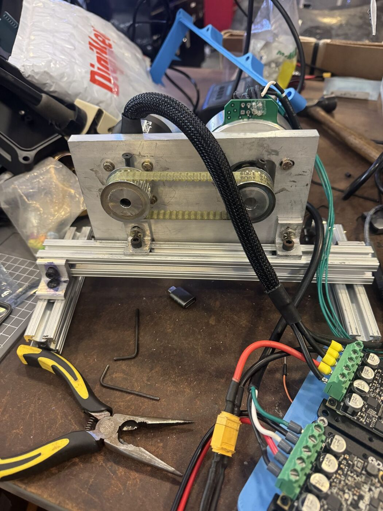
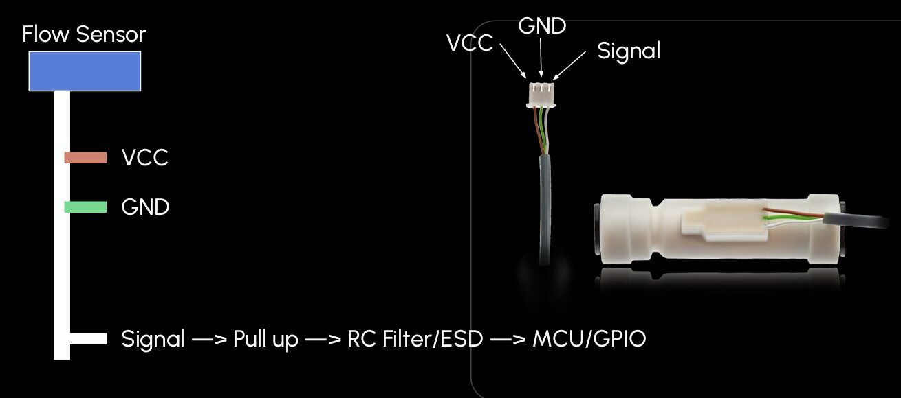
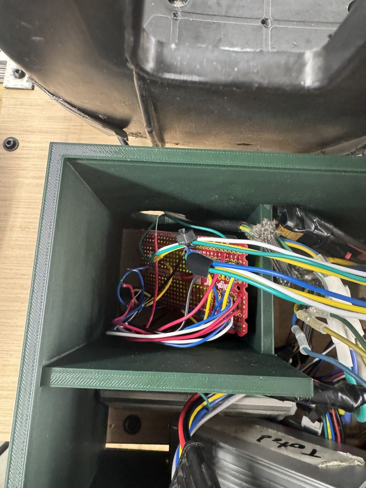
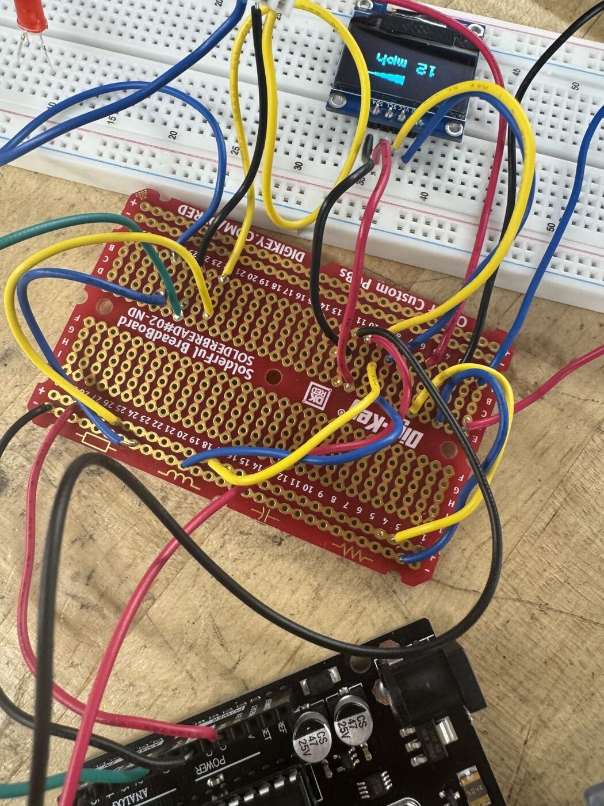
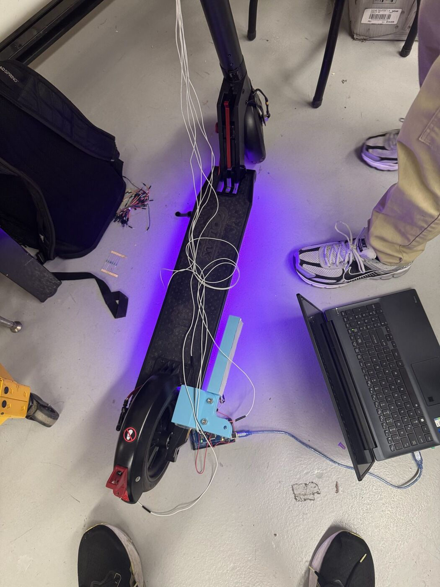
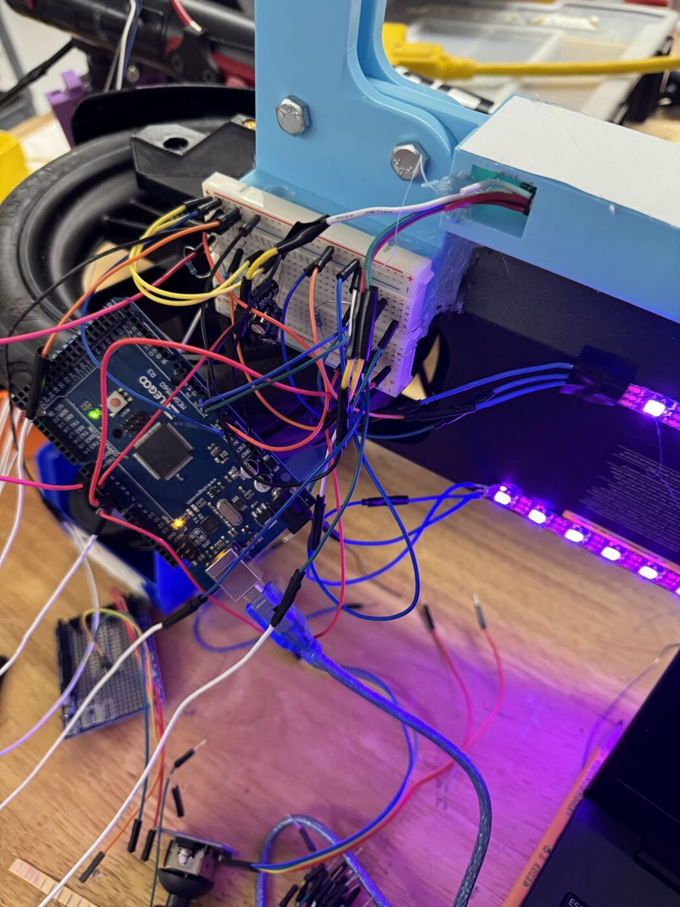
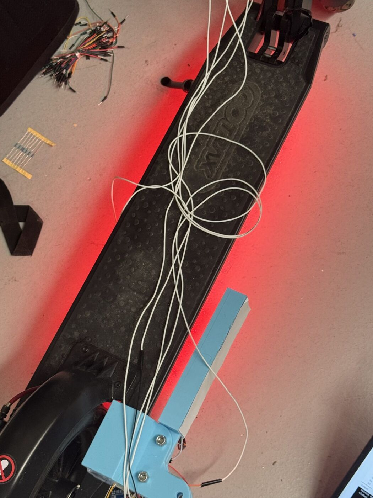
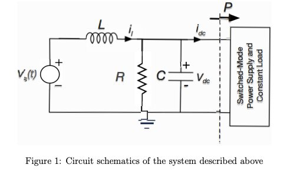
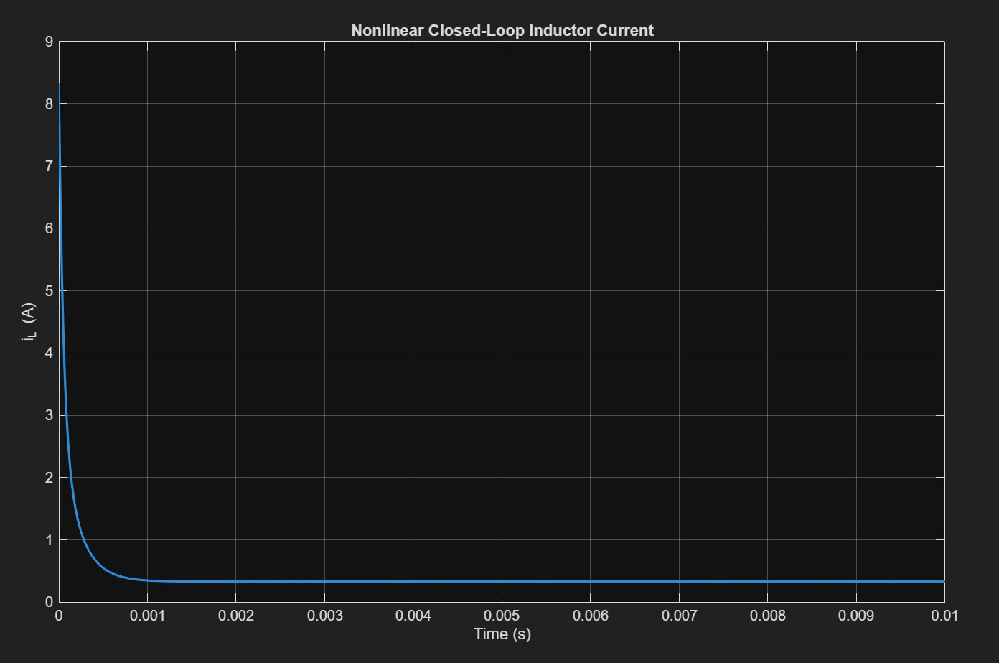

Projects
14 builds, from converter boards to robot arms. Hover a project to flip through it, then click in for the full write-up.
14 shown


 Underactuated Pendubot
Two links, one motor. Balancing the free link through the dynamics of the driven one.
Underactuated Pendubot
Two links, one motor. Balancing the free link through the dynamics of the driven one.


 Nonlinear MPC for a DC microgrid
Holding a shared DC bus steady through constant-power load steps with four boost converters.
Nonlinear MPC for a DC microgrid
Holding a shared DC bus steady through constant-power load steps with four boost converters.



 eCVT actuator testbench
A hardware-in-the-loop rig that finds shifter failures on the bench instead of on race day.
eCVT actuator testbench
A hardware-in-the-loop rig that finds shifter failures on the bench instead of on race day.

 SIGNET robotic arm
A 6-DOF arm that mirrors my arm and a vision model that reads ASL.
SIGNET robotic arm
A 6-DOF arm that mirrors my arm and a vision model that reads ASL.


 Baja controls and DAQ board
One board to log what the car is doing, timestamped and synchronized.
Baja controls and DAQ board
One board to log what the car is doing, timestamped and synchronized.
 Buck–boost power stage study
Smaller, lower-power 3.3 V rail from a single Li-ion cell, and a plan to prove it.
Buck–boost power stage study
Smaller, lower-power 3.3 V rail from a single Li-ion cell, and a plan to prove it.
 Heater and thermistor control PCB
A Raspberry Pi HAT that drives three heaters and reads three thermistors.
Heater and thermistor control PCB
A Raspberry Pi HAT that drives three heaters and reads three thermistors.
 LUMOS
A 48-LED display with an ESP32, two LED drivers and a printed enclosure.
LUMOS
A 48-LED display with an ESP32, two LED drivers and a printed enclosure.

 Supermileage driver UI board
The driver's control panel and a node on the car's CAN bus.
Supermileage driver UI board
The driver's control panel and a node on the car's CAN bus.


 Brewbird flow sensing
Accurate water volume for a brewing machine with a pulse-output flow sensor.
Brewbird flow sensing
Accurate water volume for a brewing machine with a pulse-output flow sensor.




Verstappenmobiel electric go-kart A 36 V, two-motor kart with Ackermann steering and an F1-style wheel.



Project GreenGlide Sensors and embedded feedback to make shared e-scooters safer.



Feedback control of a constant power load Linearize, design, then see what the nonlinear plant does to your controller.

 Distributed detection in Gaussian noise
How many noisy sensors does it take to get the error rate under 10⁻³?
Distributed detection in Gaussian noise
How many noisy sensors does it take to get the error rate under 10⁻³?